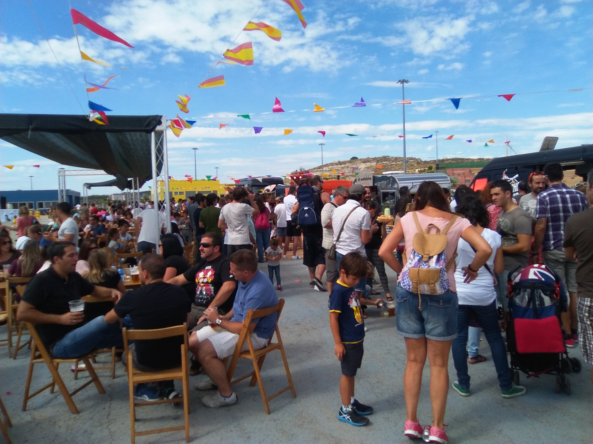
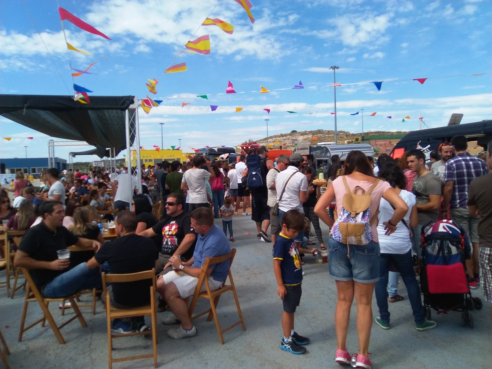
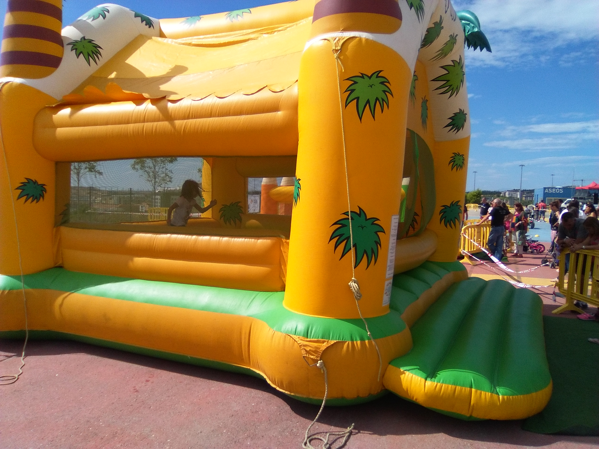
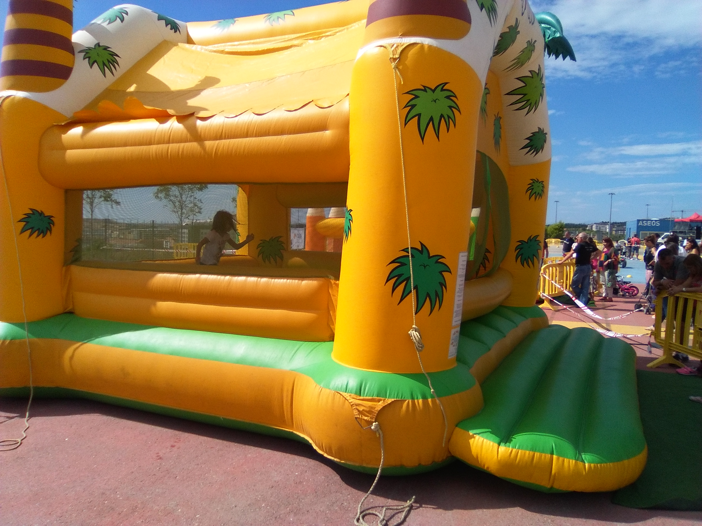

¿Por qué?
Delta Wolves se crea tras la unión de grandes profesionales, que buscaban poder aplicar todas las técnicas aprendidas a lo largo de su dilatada carrera, en una empresa propia.
¿Qué?
De nuestra unión, nace una compañía que en poco tiempo se está convirtiendo en una garantía de éxito para cualquier negocio. Aplicamos nuestra experiencia y conocimientos sobre las empresas y negocios que requieren una mejora de sus beneficios.
¿Cómo?
Ayudando, asesorando y si fuera necesario, invirtiendo en las empresas que, por falta de liquidez, estuvieran en peligro de quiebra.

Contacto
Debemos conocer al detalle todos tus problemas. Para ello generamos un clima de confianza y de confidencialidad, en el que podrás expresarte libremente, para que podamos detectar todos los detalles, que han hecho que tu empresa no proporcione los beneficios deseados.
1Plan
Desde el comienzo de nuestra colaboración contigo,observarás los cambios que repercutirán en tu negocio. Siendo un aliciente más a la confianza generada por ambas partes.
2Acción
Te diseñamos un plan a medida, en función de tus necesidades actuales para que tu empresa vuelva a recuperar la capacidad de negocio perdida. Determinaremos los tiempos de ejecución a corto, medio y largo plazo para que valores los resultados en los plazos acordados.
3Servicios
¿Quiénes somos?
Gracias a nuestra trayectoria profesional contamos con el mejor equipo humano concienciado con la situación actual. Nuestra atención personalizada hace que cada empresa o cliente no sea un número en un expediente, sino que sea tratada/o con la atención que merece. Si quieres saber más sobre lo que hacemos te invitamos a leer nuestro blog
Compromisos
- + Fondos destinados a comedores sociales
- + Apadrinamientos
- + Fondos destinados a lucha contra el cáncer
- + Cuidar el medioambiente
Valores
- + Honestidad
- + Tenacidad
- + Ética de trabajo
- + Ser resolutivos
Misión
- + Incrementar ventas
- + Minimizar costes
- + Fidelizar clientes
- + Garantizar la inversión
Eventos


 

 

Organizamos y participamos en todo tipo de eventos. Mándanos tu propuesta y realizaremos tu sueño.
Somos la primera empresa Española que garantiza el cien por cien de éxito en cada proyecto. Nuestro compromiso es el mayor que se puede adquirir con un cliente, ya que cada euro invertido en la recuperación del negocio, está asegurado de tal forma, que si nuestro cliente no incrementa sus ventas, no cobramos. Una vez asegurado el futuro de la empresa, nuestro compromiso sigue estando vigente, creando un vínculo empresarial, que ofrece las garantías de éxito que el cliente solicita, hasta el cierre de negocio o cese de actividad.